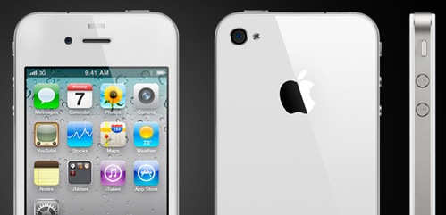

White iPhone 4’s are shipping to Apple retails stores. As an existing iPhone 4 owner, buying a phone whose only difference is color seems wasteful. I know my girlfriend is going to want one, but I’m going to pass.